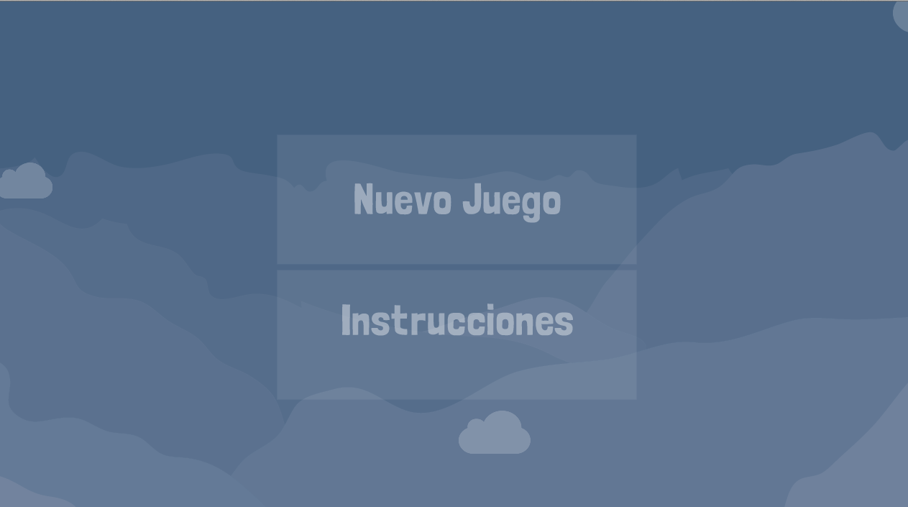
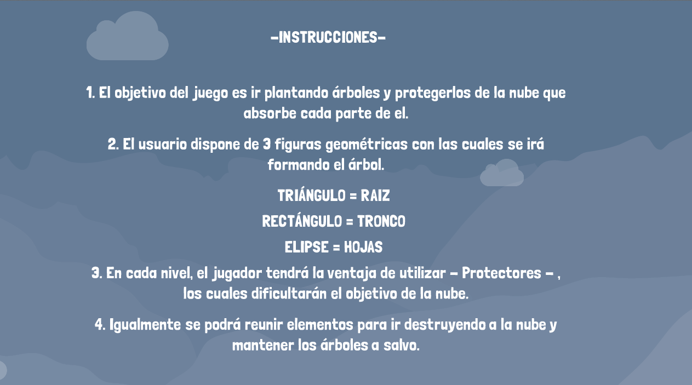

PROCESO DE CREACIÓN DEL MENÚ Realizado por Jorge Yepez Se procedió a realizar la programación en el programa P5js. Se utlizaron objetos, los cuales contenían las nubes que están moviendose por detrás. Así como el texto de ¨NUEVO JUEGO¨ e ¨INSTRUCCIONES¨. Se utilizó booleanos, para que el programa sepa que cuando el jugador presione el botón ¨NUEVO JUEGO¨, las nubes ya no se proyecten y que desaparezca el otro botón de ¨INSTRUCCIONES¨.  Para este último, de igual manera al momento de ser presionado el botón de ¨NUEVO JUEGO¨ desparece y sale un texto con las instrucciones del juego.  Cada vez que el jugador presione cualquiera de estos dos botones. Aparecera una nueva opción llamada ¨REGRESAR¨, que le permitira regresar al menú principal.